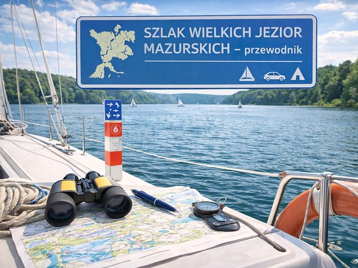

5 sierpnia 2026 · 7 min czytania
Szlak Wielkich Jezior Mazurskich – co warto o nim wiedzieć?
Szlak Wielkich Jezior Mazurskich to system ponad dwudziestu jezior połączonych kanałami, po którym można żeglować cały tydzień bez powtarzania tej samej trasy. Jest dostępny zarówno dla jachtów żaglowych, jak i motorowych, a także dla większych jednostek pasażerskich kursujących w ramach żeglugi śródlądowej. To jeden z najbardziej rozbudowanych systemów wodnych w tej części Europy.

Nasza baza czarteru Jachty Mazury znajduje się w Giżycku, w porcie Stanica Wodna Stranda, który leży niemal w centralnym punkcie szlaku. Dzięki temu załoga wypływająca z naszej mariny ma równie blisko na północ, w stronę Węgorzewa, jak i na południe, w stronę Mikołajek czy Rucianego-Nidy.
Trasa łączy w sobie kilka rzeczy naraz. Jest siecią żeglowną z realną historią inżynieryjną, jest też szlakiem turystycznym prowadzącym przez miasteczka o kilkusetletniej metryce. Dla żeglarzy oznacza to, że rejs po szlaku to nie tylko wiatr i woda, ale też przystanie w miejscach, które mają swoją opowieść.
Do podążania szlakiem oferujemy zarówno czarter jachtów żaglowych, jak i jachtów motorowych, więc wybór jednostki można dopasować do tego, którą część szlaku załoga chce poznać najdokładniej.
Jak powstał szlak żeglowny łączący mazurskie jeziora?
Obecny kształt szlaku to efekt prac prowadzonych w XVIII wieku, a nie naturalny układ wód. Jeziora istniały tu od tysięcy lat, ale ich połączenie w spójną trasę żeglowną wymagało przekopania kanałów.
Zanim to nastąpiło, jeziora pełniły głównie funkcje użytkowe. Podróżowano po nich i spławiano towary, przede wszystkim drewno i zboże, a między poszczególnymi zbiornikami przeprawiano się drogą lądową. Pierwszymi znanymi z historii użytkownikami tych wód byli Galindowie, bałtyjskie plemię pływające tu ponad dwa tysiące lat temu. W średniowieczu ich miejsce zajęli Krzyżacy.
Przełom nastąpił w drugiej połowie XVIII wieku. Z inicjatywy osób związanych z dworem króla pruskiego rozpoczęto prace nad systemem umożliwiającym żeglugę między jeziorami. W latach 1765-1772 przekopano kanały: Węgorzewski, Sztynorcki, Giżycki, Piękna Góra, Niegociński, Kula, Szymoński, Mioduński, Grunwaldzki, Tałcki i Nidzki. W XIX wieku część z nich dodatkowo pogłębiono, co pozwoliło na żeglugę większym jednostkom.
Dziś rozwijana jest także koncepcja tak zwanej Pętli Mazurskiej, która miałaby połączyć kilka mniejszych zbiorników i umożliwić żeglugę między jeziorami Niegocin i Śniardwy inną drogą niż obecnie. W 2023 roku ukończono studium wykonalności, ale przedsięwzięcie pozostaje na etapie planowania. Pokazuje to, że sieć kanałów mazurskich nie jest zamkniętym rozdziałem historii.
Jakie jeziora wchodzą w skład Krainy Wielkich Jezior Mazurskich?
Na trasę główną i jej odnogi składa się ponad dwadzieścia jezior, ale kilka z nich wyznacza charakter całego szlaku. Zaczynając od północy, są to między innymi Mamry, Kisajno, Niegocin, Tałty, Bełdany, Mikołajskie, Śniardwy i Nidzkie.
Największe akweny na trasie
- Mamry – kompleks kilku połączonych jezior o łącznej powierzchni ponad 104 km², drugi co do wielkości akwen w Polsce po Śniardwach. Na jego terenie znajdują się 33 wyspy, z czego najwięcej na jeziorze Kisajno.
- Śniardwy – największe jezioro w Polsce, nazywane czasem Morzem Mazur. Jego dno kryje głazy narzutowe stanowiące realne zagrożenie dla jednostek, dlatego wymaga większej ostrożności niż pozostałe akweny na szlaku.
- Niegocin – jezioro otwarte na wiatry ze wszystkich kierunków, na którym fala potrafi osiągnąć zaskakujące rozmiary jak na warunki śródlądowe. Leży tuż przy Giżycku.
- Tałty – najgłębsze jezioro na szlaku, o rynnowym kształcie i długości ponad 12 km. Stanowi fragment trasy łączącej Ryn z Rucianem-Nidą.
- Kisajno – jedno z najpiękniejszych jezior na trasie, z rozwiniętą linią brzegową i licznymi wyspami objętymi ochroną rezerwatową. Prowadzi przez nie tak zwany Szlak Łabędzi.
- Bełdany – odcinek prowadzący przez Puszczę Piską aż do śluzy Guzianka, popularny ze względu na malowniczość trasy i częstą obecność innych jednostek w sezonie.
Miasta i miejscowości wzdłuż szlaku
Trasa prowadzi przez cztery główne miejscowości: Węgorzewo, Giżycko, Ryn i Mikołajki. Każda z nich ma inny charakter i inny zestaw atrakcji, więc kolejność zwiedzania warto dopasować do tego, ile czasu załoga chce spędzić na lądzie, a ile na wodzie.
Węgorzewo leży na wyspie rzeki Węgorapy i jest naturalnym punktem startowym dla załóg płynących od strony jeziora Mamry. Giżycko, w którym mamy naszą bazę, leży w samym sercu szlaku, między jeziorami Niegocin i Kisajno. Ryn to niewielkie miasteczko z zamkiem krzyżackim górującym nad jeziorem Ryńskim. Mikołajki bywają nazywane żeglarską stolicą Mazur ze względu na jedną z największych marin na trasie.
Za Mikołajkami szlak się rozdziela. Jedna odnoga prowadzi na południowy zachód do Rucianego-Nidy przez jezioro Bełdany i śluzę Guzianka, druga na południe do Pisza przez jezioro Śniardwy i Roś. Wybór między nimi to jedna z ważniejszych decyzji przy planowaniu dłuższego rejsu.
Ile kilometrów liczy trasa przez Wielkie Jeziora Mazurskie?
Główna oś szlaku, prowadząca od Węgorzewa do Jeziora Nidzkiego, liczy ponad 100 kilometrów. To dystans, który przy spokojnym tempie żeglowania i codziennych postojach w różnych miejscach spokojnie mieści się w tygodniowym czarterze wypływającym z naszego portu w Giżycku.
Doliczając odnogi szlaku, w tym trasę do Pisza i boczne zatoki warte odwiedzenia, łączna długość tras żeglownych na Mazurach przekracza 200 kilometrów, a licząc wszystkie warianty i objazdy, można mówić nawet o 330 kilometrach dróg wodnych. Przepłynięcie tego w całości to już plan na blisko dwa tygodnie, nie na jeden tydzień urlopu.
Dla osób, które mają mniej czasu, dobrym rozwiązaniem jest wersja skrócona. Kilka dni wystarczy, żeby poznać jeden odcinek szlaku, na przykład trasę z Giżycka do Mikołajek i z powrotem, bez pośpiechu, ale też bez ambicji dotarcia do każdego zakątka Krainy Wielkich Jezior. Ilość czasu, jaką warto zarezerwować, najlepiej dopasować do tego, czy priorytetem jest dotarcie jak najdalej, czy raczej spokojne poznanie kilku miejsc.
Co warto zobaczyć, żeglując szlakiem jezior?
Szlak Wielkich Jezior Mazurskich oferuje nie tylko widoki z pokładu, ale też konkretne miejsca warte zejścia na ląd. Poniżej kilka, które regularnie polecamy naszym gościom.
- Twierdza Boyen w Giżycku – dziewiętnastowieczna forteca w kształcie nieregularnego wieloboku, do 1957 roku obiekt wojskowy, dziś dostępna do zwiedzania. Leży niedaleko naszej bazy, więc dobrze sprawdza się jako pierwszy lub ostatni punkt rejsu.
- Most obrotowy na Kanale Łuczańskim – zabytkowa konstrukcja z 1889 roku, rozwierana w bok, a nie do góry, co jest rzadkością wśród tego typu mostów. Jej uroczyste otwarcie w maju rozpoczyna sezon żeglarski na Mazurach.
- Zamek krzyżacki w Rynie – czternastowieczna budowla górująca nad jeziorem Ryńskim, dziś zaadaptowana na hotel. Warto zatrzymać się tu chociaż na kilka godzin, żeby zobaczyć miasteczko z perspektywy wzgórza.
- Śluza Guzianka – obiekt o historii sięgającej XIX wieku, który pozwala pokonać różnicę poziomów między jeziorem Bełdany a Nidzkim w kilkanaście minut. To jedno z ważniejszych miejsc na trasie do Rucianego-Nidy, choć w środku dnia bywa tu tłoczno.
- Wyspy jeziora Kisajno i Szlak Łabędzi – teren objęty ochroną rezerwatową, z bogatym ptactwem wodnym i szansą na zobaczenie bielika. Zbliżanie się do samych wysp jest zabronione, ale trasa wzdłuż nich należy do najbardziej malowniczych na całym szlaku.
Jak zaplanować rejs po Krainie Wielkich Jezior?
Dobrze zaplanowany rejs po szlaku zaczyna się jeszcze przed wypłynięciem z portu, nie dopiero na wodzie. Kilka decyzji warto podjąć wcześniej, żeby uniknąć improwizacji w trakcie tygodnia.
- Wybierz kierunek i odcinek trasy. Płynąc od Giżycka na północ, poznaje się jezioro Mamry i okolice Węgorzewa, płynąc na południe, dociera się przez Mikołajki do Rucianego-Nidy albo do Pisza. Rzadko udaje się zrobić jedno i drugie w tydzień, więc warto zdecydować się na kierunek priorytetowy.
- Dobierz typ jednostki do składu załogi. Większy jacht żaglowy, taki jak jednostki w naszej flocie, wymaga patentu; mniejsze jachty żaglowe o długości kadłuba do 7,5 m można prowadzić bez niego. Jeśli w grupie nikt nie ma uprawnień, dobrym rozwiązaniem są houseboaty dostępne w czarterze bez patentu.
- Dopasuj długość czarteru do planowanej trasy. Tydzień wystarcza na główną oś szlaku, kilka dni na jeden odcinek. Szczegóły dotyczące dostępnych terminów i cen sprawdzisz w naszym cenniku.
- Uwzględnij śluzy i strefy ciszy w harmonogramie dnia. Śluza Guzianka bywa obłożona w środku dnia, a jeziora Nidzkie i Dobskie są strefami ciszy, gdzie nie wolno używać silnika. Lepiej zaplanować przepłynięcie takich odcinków wcześnie rano.
- Sprawdź aktualną mapę i prognozę pogody tuż przed startem. Wzdłuż szlaku ustawiono maszty ostrzegawcze z żółtym światłem widocznym w promieniu kilku kilometrów, których częstotliwość migania informuje o stopniu zagrożenia na wodzie.
Jeśli dopiero układacie pierwszą trasę, zerknijcie też do naszego poradnika czarterowego – zebraliśmy tam więcej wskazówek dotyczących samego procesu rezerwacji i odbioru jachtu. Niezależnie od tego, na który wariant się zdecydujecie, Szlak Wielkich Jezior Mazurskich daje wystarczająco dużo przestrzeni, żeby każdy rejs wyglądał inaczej, nawet jeśli wypływa się z tego samego portu co roku.
Czytaj dalej
- Tygodniowy rejs po Mazurach – przykładowe trasy na 7 dni Tygodniowy rejs po Mazurach to dobry sposób, żeby zobaczyć różne oblicza regionu – od dużych portów i popularnych miejscowości po spokojne bindugi i dzikie zatoki. W ciągu 7 dni można wiele zobaczyć. Warto planować każdy dzień, biorąc pod uwagę warunki pogodowe, własne możliwości oraz ilość czasu, jaką chcemy spędzić żeglując.
- Czarter jachtu we wrześniu – czy to dobry pomysł? Wrzesień to dobry moment na czarter jachtu na Mazurach. Większość żeglarzy potwierdza to w prywatnej rozmowie, ale rzadziej przekłada na konkretną rezerwację – bo lipiec i sierpień wydają się bezpieczniejszym wyborem. Tymczasem wrzesień na Mazurach jest spokojniejszy, tańszy i – dla tych, którzy cenią żeglowanie bardziej niż rekreację przy basenie – po prostu bardziej żeglarski.
- Czarter jachtu – kompletny przewodnik Czarter jachtu na Mazurach to jeden z najlepszych sposobów na spędzenie urlopu blisko natury, z dala od tłumów i w swoim własnym tempie. Jednocześnie dla wielu osób — zwłaszcza przy pierwszym rejsie — jest to temat pełen pytań, niepewności i obaw: jaki jacht wybrać, ile to naprawdę kosztuje, jakie formalności trzeba spełnić i jak uniknąć typowych błędów.
Wybrałeś termin?
Sprawdź, które jachty są wolne, albo zadzwoń do nas.